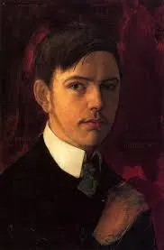

Fue un pintor, escritor y poeta turco que se dio a conocer por fusionar en su estilo el
arte moderno occidental y el tradicion folclorica turca, en sus obras refleja iriqueza cultural y
nacional.

Se dio a conocer por retratos de la vida cotidiana en estambul y naturalezas muertas, tuvo un toque
de expresionismo en su estilo reslista contribuyo al desarrollo del arte contemporaneo en
Turquia.

Fue un escritor y caricaturista reconocido en la revista "Girgir", por medio de sus caricaturas abordaba
temas sociales y politicos, con esto se volvio una figura importante en el humor grafico.

Se dio a conocer por sus esculturas y obras monumentales en las que refleja temas tanto historicos como
culturales de turquia, contribuyo al paisaje urbano del pais.

llamado como "el ojo de Estambul", fue de los periodistas mas importantes en Turquia, en sus fotografias
captaba la vida cotidiana y cultural en estambul, estas fotografias son reconocidas a
nivel
internacional por su calidad.
Fue un pintor Otomano, de los precursores del arte moderno en Turquia, dejo una marca en
el
arte turco por su enfoque innovador y contribucion en el desrrollo en el arte del pais.
Pionera del arte abstracto en TurquiaEn su obra se destaco el buen uso de los colores y
la
geometria, contribuyó al desarrollo del arte moderno en el país y la región.
Fue un Famoso compositor y cantante de musica folclorica turca, se dio a conocer por
tener
una voz distintiva y por intepretar musica tradicional anatolia, conesot contribuyendo a la preservacion y
promocion de la musica tradicional de Turquia.
Diretor y guionista de cine turco-aleman, se ha ganado el reconocimiento internacional por las peliculas
en
las que aborda temas de migracion, cultura, con esto contribuye al dialogo intercultural.

Ceramista turca que fue de las pioneras del arte ceramicomoderno de Turquia, por su innovacion y
creatividad
ha sido muy reconocida, sus obras han sdo exhibidas en galerias por todo el mundo.